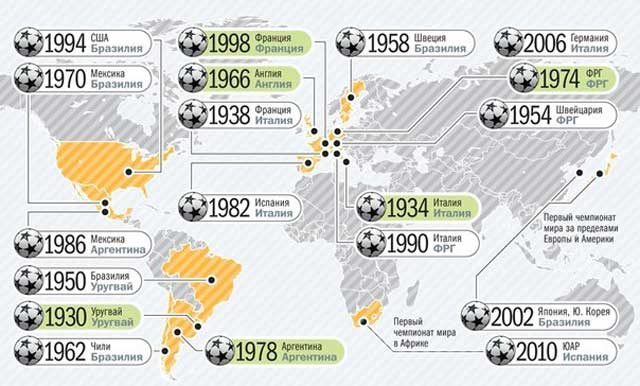
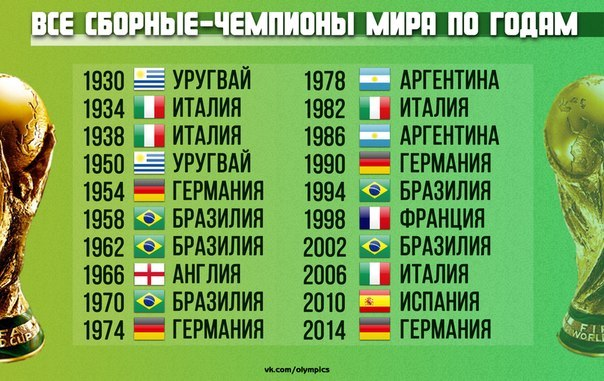

ИСТОРИЯ ЧЕМПИОНАТОВ МИРА
Чемпиона́т ми́ра по футбо́лу, часто также называемый Ку́бок ми́ра ФИФА́, Ку́бок ми́ра по футбо́лу, Чемпиона́т ми́ра ФИФА, мундиа́ль (от исп. Copa Mundial de Fútbol) — главное международное соревнование по футболу. Чемпионат мира проводится управляющим органом мирового футбола — ФИФА, и участвовать в нём могут мужские национальные сборные стран-членов ФИФА всех континентов.
Финальные турниры чемпионатов мира проводятся раз в 4 года, как и Олимпийские игры, однако, если учесть региональные отборочные турниры, каждый мундиаль продолжается более 3 лет. В отборочных соревнованиях чемпионата мира 2010 года участвовали 204 команды. В финальном турнире, который проходит раз в 4 года в течение примерно месяца в заранее выбранной стране-хозяйке чемпионата, с 1998 года принимают участие 32 команды (31 команда, получившая такое право по итогам отборочного турнира, и сборная страны-хозяйки (с 1938 года); теоретически турнир могут принять и более одной страны, однако за более, чем 85-летнюю историю только один раз ФИФА доверила проведение ЧМ двум странам.
Впоследствии организация неоднократно давала понять, что не нацелена на проведение турнира в двух и более странах (в отличие, например, от УЕФА, которая начиная с ЕВРО-2000, неоднократно доверяла Чемпионаты Европы нескольким странам). С 1938 до 2002 года победитель предыдущего розыгрыша чемпионата мира тоже участвовал в финальном турнире без прохождения квалификации; с 2006 года победитель предыдущего чемпионата мира проходит отборочный турнир на общих основаниях).}
Финальная часть чемпионата мира по футболу, которые проводятся с 1930 года (с перерывом в 1942 и 1946 годах из-за Второй мировой войны), имеет колоссальную зрительскую аудиторию и привлекает большой интерес во всём мире. Например, финал чемпионата 2006 года посмотрело 715.1 миллиона зрителей, что стало девятой телетрансляцией по количеству просмотров.
Последний чемпионат мира по футболу прошёл с 12 июня по 13 июля 2014 года в Бразилии. Действующий чемпион мира — национальная сборная Германии. Следующий Чемпионат 2018 года пройдёт в России, а чемпионат 2022 года пройдёт в Катаре.
Хронология событий, предшествующих нашей победе
15 января 2009 - официальное начало регистрации заявок
2 февраля 2009 - последний срок подачи заявки на участие
16 марта 2009 - крайний срок подачи документов
14 мая 2010 - крайний срок подачи всех документов заявки
19 июля 2010 - 4-х дневная проверка ФИФА поданных заявок
17 сентября 2010 - завершение всех проверок, отсева и допуска к участию в голосовании
2 декабря 2010 - голосование и победа!
18 марта 2009 года ФИФА заявила, что на проведение чемпионатов 2018/2022 годов было принято 9 заявок, которые подали: Австралия, Англия, Индонезия, Мексика, Россия, США, Япония, Португалия и Испания (совместная заявка), Бельгия и Нидерланды (совместная заявка). Только Южная Корея и Катар объявили об участии в выборах хозяина Чемпионата мира 2022 года. Позднее, в соответствии с действующим положением ФИФА о ротации континентов, из гонки за турнир 2018 года выбыли представители Азии (в том числе Австралии) и Америки.
19-й международный Чемпионат мира по футболу 2010 прошел в ЮАР (в Африке). Следующий 20-й международный Чемпионат мира по футболу пройдёт в 2014 году в Бразилии ( в Южной Америке). А существует правило, что игры ЧМ каждые четыре года должны проходить на разных континентах. Поэтому проведение ЧМ-2018 вполне ожидалось в Европе.
В ходе презентации (02.12.2010) российская делегация показала несколько видео. Первое было посвящено истории о том, что значит право проведения чемпионата по футболу для маленького российского мальчика, который играет за свою страну, забивает гол в финале чемпионата в матче против Италии, а потом просыпается. Второе видео было посвящено рассказу о существующих и будущих стадионах России, транспортной инфраструктуре и других необходимых составляющих для проведения ЧМ.
.png)